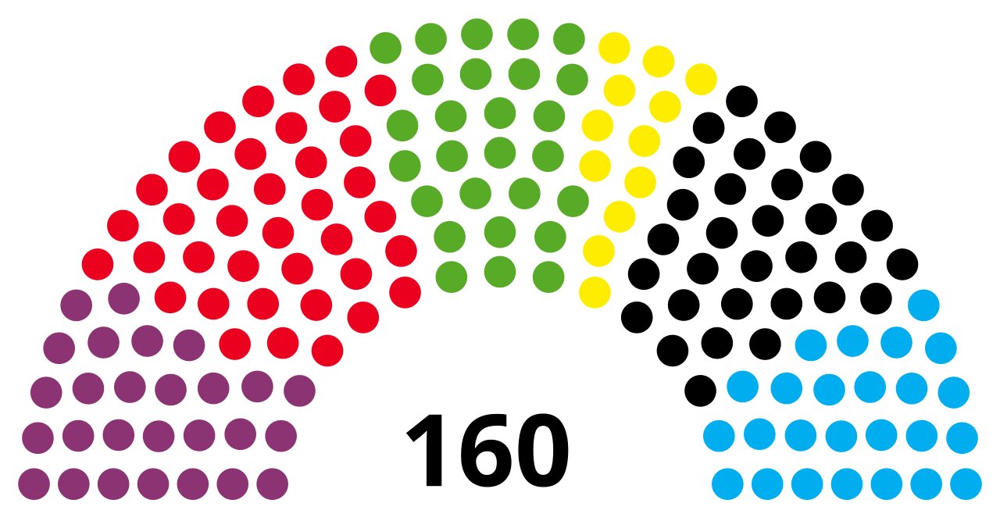
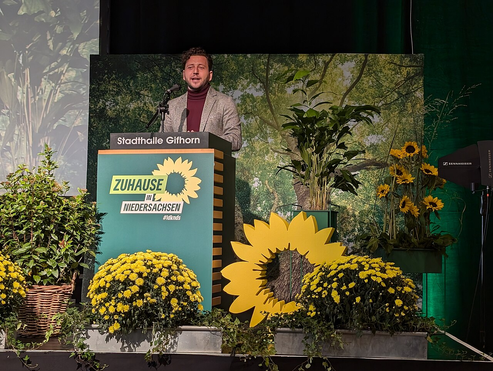

01 / Dot field
Immagine ridotta a una trama di punti: riconoscibile, editoriale, leggera. Funziona bene sotto un summary senza rubare il ruolo al titolo.
Campioni di trattamento per immagini CC0 pertinenti alle notizie. Non sono cinque filtri dello stesso effetto: sono cinque grammatiche visive possibili per la pagina.

Immagine ridotta a una trama di punti: riconoscibile, editoriale, leggera. Funziona bene sotto un summary senza rubare il ruolo al titolo.

Contrasto forte e diagonale cromatica: la figura resta come una silhouette, mentre rosa e viola costruiscono il segnale.
Una fascia orizzontale interrompe l’immagine e la trasforma in un dispositivo informativo. È la proposta più vicina alla grammatica delle barre già presenti nel sito.
Foto quasi documentaria, con tre segnali di colore che sembrano disallineare l’immagine. Più urbana e più energica.
Una soluzione più chiara e materica: fotografia calda, righe diagonali e un rapporto forte tra carta e inchiostro.
Le immagini sono già presenti nel progetto come asset verificati. I campioni mostrano il trattamento grafico, non propongono ancora una modifica alla produzione. La decisione successiva dovrebbe scegliere una grammatica e definire quando usare fotografia, silhouette o fallback testuale.